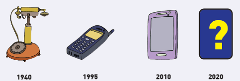

Ayo Belajar
Activity
Setelah kegiatan menanam, memupuk, dan merawatnya, kini tibalah waktu Paman Udin memanen padi.
Ia menghubungi pedagang untuk menjual padi hasil panennya. Pedagang itu tinggal di kota yang letaknya jauh dari rumah Paman Udin.
Untuk memudahkan komunikasi, Paman Udin menggunakan telepon.Di bawah ini beberapa gambar perkembangan telepon.

Teknologi komunikasi sangat berkembang dari waktu ke waktu.Ceritakan perkembangan teknologi telepon yang dapat kamu pahami
dari gambar di atas!

Apakah perkembangan itu bermanfaat bagi pekerjaan kita?
Menurutmu, bagaimana perkembangan telepon pada masa depan?